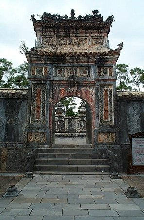

Countless riches, ascension to the throne via murder of his older brother, 104 wives, a vast web of royal concubines, and composition of over 4,000 poems-this plotline sounds like the villain in a James Bond movie. Alas, the life of Emperor Tu Duc’s is very real. His reign lasted the longest in the Nguyen dynasty of Vietnam.
Aside from the many lovers and wives, he had no heir to gift his accumulated wealth due to infertility. What was an emperor to do? He built a temple with a tomb that took 4 years to complete, funded by heavy taxation and 200 loyal laborers. His remains rest there and it is a tourist spot nowadays.
His treasures may or may not be in the catacombs of the temple, beneath is tomb. It is a protected site, heavily guarded against thieving tourists. Tu Duc beheaded all 200 servants to keep the temple’s secrets hidden. It’s rumored the treasure lies elsewhere, but like the Egyptians, it makes sense that the emperor would want his wealth by his side as he passed into the afterlife. Why else would he build such a grand monument to his death and keep is so safeguarded and murder the only witnesses to the inside depths?
Within this monument, or in a secret location on the outskirts of a city called Hue, Tu Duc’s treasures are untouched and unprotected. To seek one must gain the courage to try. Among the treasures are heirloom jewels, priceless coins and historic tokens, and most importantly, lots and lots of gold.
To learn more about the Tomb of Tu Duc, follow these resources:
Tomb of Tu Duc (wikipedia.org)
Hue Can't Be Serious But Tu Duc Was (sunshinecoastdaily.com)